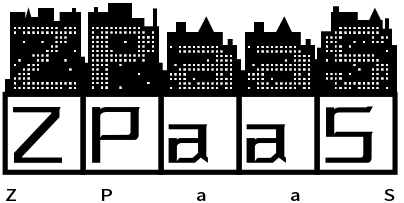

<aside class="main-sidebar sidebar-dark-primary elevation-4 ">
    <a href="/" class="brand-link">ZPAAS 1.0
        
    </a>
    <nav class="mt-2 nav-child-indent text-sm brand-link nav-compact ">
      <ul class="nav nav-pills nav-sidebar flex-column" data-widget="treeview" role="menu">
          <!-- 使用 .nav-icon 类将图标添加到链接
               可以使用 font-awesome 或其他字体库 -->
          <li class="nav-item menu-open active">
            <ul class="nav nav-treeview">
              <li class="nav-item ">
                <span class="nav-link navbar-text text-white bg-dark">当前用户：{{ .currentUser.Name }}</span>
                  <a href="/out" class="nav-link btn btn-sm btn-secondary btn-outline-danger active">退出 ZPAAS</a>
                  
                  <!-- 用户例表 -->
                  <!-- 如果是 user 管理就是调用 active -->
                <a href="/user" class="nav-link {{ if eq .navKey `user` }}active{{ end }}">
                  <i class="far fa-circle nav-icon"></i>
                  <p>
                    用户列表
                    <i class="right badge badge-danger"></i>
                    <span class="right badge badge-danger">NEW</span>
                  </p>
                </a>
                <!-- 添加用户 -->
                <!-- 如果是 adduser 管理就是调用 active -->
                <a href="/user/add/" class="nav-link {{ if eq .navKey `adduser` }}active{{ end }}" >
                  <i class="far fa-circle nav-icon"></i>
                  <p>
                    添加用户
                    <i class="right badge badge-danger"></i>
                    <span class="right badge badge-danger">NEW</span>
                  </p>
                </a>

                <!-- web shell -->

                <a href="/webshell" class="nav-link {{ if eq .navKey `webshell` }}active{{ end }}" >
                  <i class="far fa-circle nav-icon"></i>
                  <p>
                    WEB Shell
                    <i class="right badge badge-danger"></i>
                    <span class="right badge badge-danger">NEW</span>
                  </p>
                </a>

                <!-- paas 管理 -->
                  <a href="/paas" class="nav-link {{ if eq .navKey `paas` }}active{{ end }}">
                    <i class="far fa-circle nav-icon"></i>
                    <p>
                      PaaS 管理
                      <i class="right badge badge-danger"></i>
                      <span class="right badge badge-danger">NEW</span>
                    </p>
                  </a>

                  <!-- Prometheus 监控 -->
                  <a href="/prometheus" class="nav-link {{ if eq .navKey `prometheus` }}active{{ end }} ">
                    <i class="far fa-circle nav-icon"></i>
                    <p>
                      普罗米修斯监控
                      <i class="right badge badge-danger"></i>
                      <span class="right badge badge-danger">NEW</span>
                    </p>
                  </a>
              </li>
            </ul>
          </li>
        </ul>
      </nav>
  </aside>